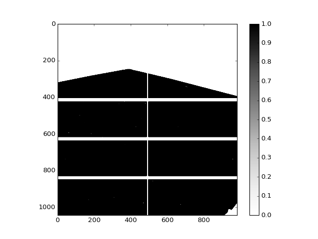
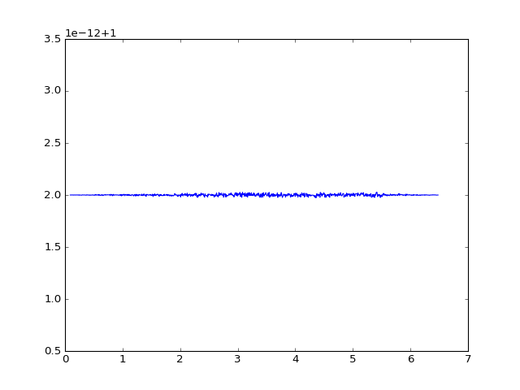

Integrating a Constant Image With Masked Values¶
This test shows that nothing wrong happens at mask borders. For those we want to integrate an image that is one everywhere except for the masked regions
We use the following calibration without Polarization correction and mask:
{
"Title": "Example Calibration",
"Geometry": {
"Tilt": {
"TiltAngleDeg": -0.56,
"TiltRotDeg": 73.569
},
"DedectorDistanceMM": 1031.657,
"BeamCenter": [
808.37,
387.772
],
"Imagesize": [
1043,
981
],
"PixelSizeMicroM": [
172.0,
172.0
]
},
"Directory": [
"."
],
"Masks": [
{
"PixelPerRadialElement": 1,
"MaskFile": "data/AAA_integ.msk",
"Oversampling": 3,
"Name": "",
"Phi-mode": false,
"qStart": 0.0,
"qStop": 5.0
}],
"Slices": [],
"GISAXSmode": false,
"Wavelength": 1.54,
"Live-Filelisting": true,
"OverwriteFiles": true,
"Threads": 2
}
The image we are going to integrate is exactly the array the SAXS.openmask() returns:
(Source code, png, hires.png, pdf)
{kind=link}
{kind=link}

The result is constant 1 (where the intensity is not 0), save 2e-12.
(Source code, png, hires.png, pdf)
{kind=link}
{kind=link}
